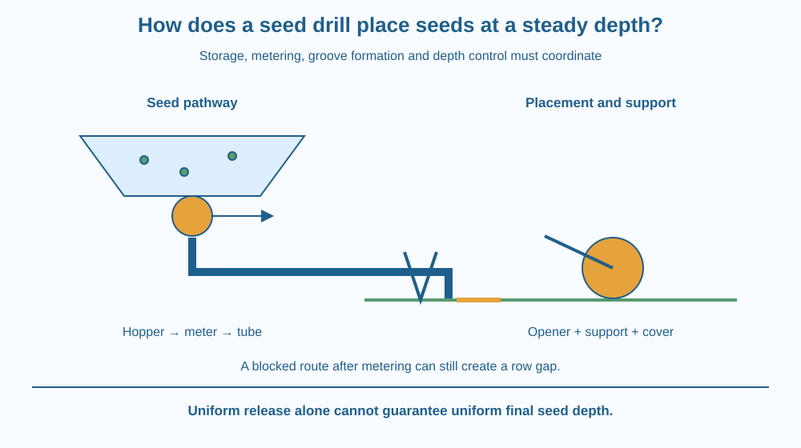

Trace seeds through a simple seed-drill system. Identify the hopper, metering mechanism, furrow opener and depth-control arrangement. Explain why uniform seed spacing and depth require coordinated design rather than merely pulling a box of seeds across a field.
A farmer moves a sowing implement along a row, and seeds are delivered into the soil at a fairly regular depth. The seeds begin together in a hopper, yet they do not all fall into one heap at the first opening.
Something must regulate their release, guide them to a prepared location and control the relationship between the machine and the soil surface. These jobs belong to different parts of the device.
Understanding their sequence makes the drill easier to explain than memorising a picture of a tractor with several pipes hanging behind it.
A seed drill places seeds in prepared rows using a coordinated set of components. Designs vary, so the lesson follows a simple mechanical model rather than claiming that every modern drill has identical parts or control systems.
The hopper stores the seed supply. A metering mechanism controls the rate at which seeds leave it. Depending on the design, rotating parts, grooves, cells or other arrangements release seed in a regulated way.
Some drills coordinate metering with a ground wheel. As the implement travels, the wheel turns and helps link seed release to distance moved. Other machines use different drive and control methods. The general requirement is to match delivery to the intended sowing pattern.
A furrow opener makes a groove in the soil. A tube or channel guides released seeds toward that groove. The seed should arrive where the opener has prepared a suitable path, not bounce into an unrelated part of the row.
Depth control keeps the placement system at a suitable position relative to the soil surface. Wheels, skids or other support arrangements can contribute. Consistent machine position matters because a fixed tube length alone does not guarantee constant seed depth on uneven ground.
A covering or closing component returns soil over the seed or firms the surrounding region, depending on the design. This helps establish the intended contact and cover. Too much compaction or inappropriate depth can still interfere with emergence.
Uniform depth is useful because seeds then encounter more comparable moisture, cover and emergence distance. However, the correct depth is crop- and condition-specific. No single setting suits every seed size, soil or field moisture condition.
The mechanism must also cope with practical faults. A blocked tube can leave gaps, an unsuitable metering setting can create clumps, and slipping or bouncing support wheels can disturb delivery. Inspecting the hopper's fullness alone does not confirm that the seed reaches the intended position.
Draw a flow chain: storage, controlled release, guided travel, groove placement and covering. Put each named component under the job it performs. This separates material movement from the machine's physical support.
Add a second chain showing distance travelled linked to the metering drive. If the machine moves faster, the delivery arrangement must still maintain the intended rate per distance, within its operating capabilities.
Now introduce a blocked tube in the drawing. Seeds may still leave the meter, yet the row receives an uneven supply. The fault model shows why checking only one component can miss a failure farther along the path.
The SVG shows a hopper above a metering wheel, a seed tube behind a furrow opener and a ground-support wheel controlling placement height. A closing element follows the seed path.
Arrows trace both seed movement and the coordination between travel and release. The picture uses an enlarged open section so hidden components remain visible. It is not a manufacturing drawing or a specification for constructing a real implement.
A comparison shows two seeds placed at different depths when the support position varies. The diagram links depth control to field contact rather than suggesting that every seed simply falls the same distance through open air.

Seed drills are used in Indian agriculture for various crops and field conditions. Their settings and designs reflect the intended seed and sowing method. A picture of one implement should not be treated as a complete description of every machine called a drill.
Small manual sowing aids perform some of the same jobs on a different scale. They still need to control seed release and placement. The common engineering idea is coordination, not the size of the tractor or the presence of a particular brand.
Students must not approach working farm machinery for this lesson. A paper mechanism sequence provides the relevant understanding without moving parts, sharp openers or operating equipment.
Use paper, a pencil and a small dry cup of beans as tokens if permitted. Keep small objects away from young children and do not eat handled tokens.
The activity models coordination, not actual sowing performance. A hand-moved token does not reproduce seed damage, wheel slip or soil resistance. The purpose is to identify the job of each component and a place where a fault could interrupt the chain.
Suppose a drill's tube is the same length everywhere, but its wheels bounce over uneven ground. Why can seed placement depth still vary?
Now consider seeds of two very different sizes passing through one metering setting. What could happen to release regularity? Explain why a system needs suitable settings and inspection rather than assuming one mechanism delivers every seed type identically.
Which component controls seed release from the supply?
Answer: C — Metering regulates how seeds leave the hopper for delivery.
Why does a seed drill need depth control?
Answer: A — Support and field contact affect where the seed is placed below the surface.
The meter works but a delivery tube is blocked. What can occur?
Answer: B — A fault after metering can interrupt the path to the intended placement site.
Design a labelled sowing-system diagram with one component for each job: storage, metering, groove opening, placement and covering. Include an independent note about depth control.
Choose two faults and trace their consequences to the row. At least one fault must occur after metering so your explanation shows why a working release mechanism does not guarantee successful final placement. Do not propose constructing a sharp opener at home.
Uniform placement depends on relationships between components as much as on individual parts. A perfectly built tube cannot guarantee depth if its support moves unpredictably, and a good meter cannot overcome a blocked delivery route. Engineering performance emerges from the coordinated system rather than one impressive-looking piece.
A seed drill coordinates metering, groove formation, guided placement and depth control; regular release alone does not guarantee uniform sowing.